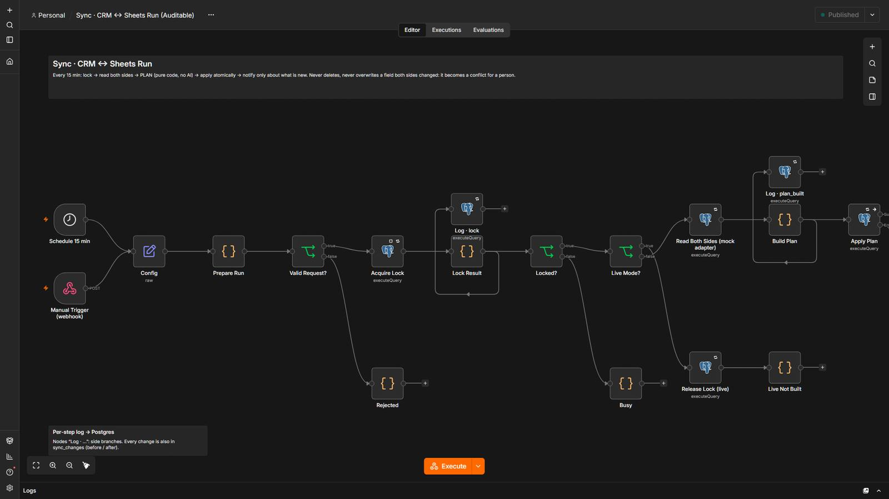
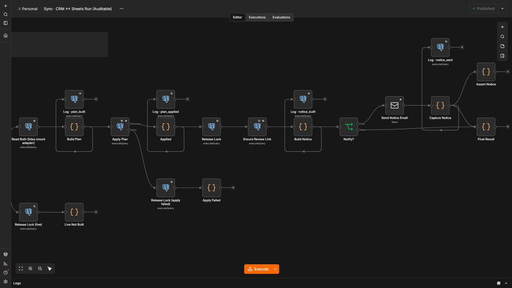
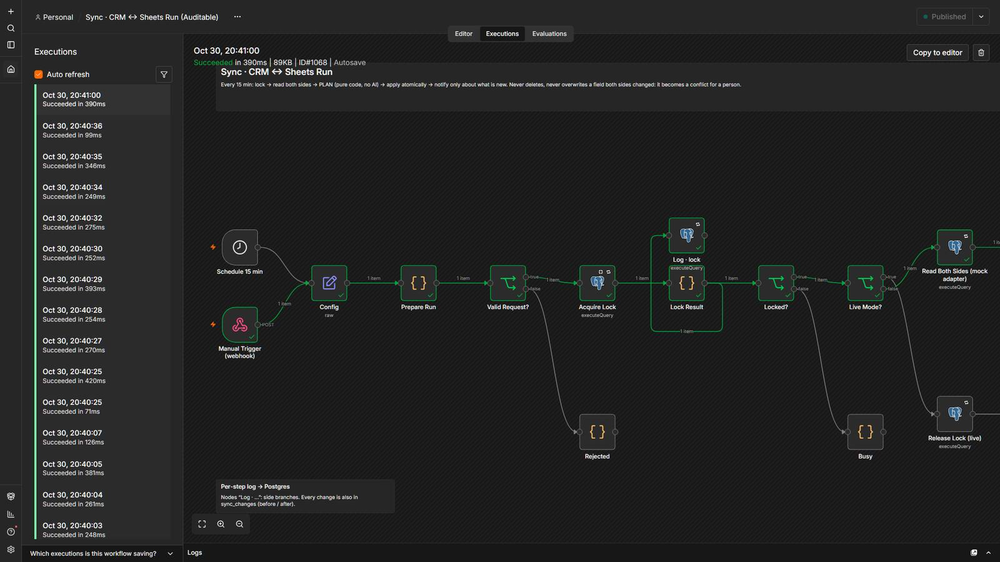

Your CRM and your spreadsheet, telling the same story.
Two systems edited by different people merge without overwriting each other. Conflicts go to a person with both values side by side, and the sync never deletes a record.
5 steps, and who decides each one.
- Code decides
Read both sides
Contacts from the CRM and the sheet, with the last synced value of every field.
- Code decides
Plan the changes
Three-way merge: only what changed on one side moves. A cleared field never overwrites the other side.
- Code decides
Apply atomically
One statement or nothing. A lock keeps two runs from colliding.
- A person
Resolve conflicts
A review page shows both values and a person picks one.
- Code decides
Weekly summary
Numbers straight from SQL: created, updated, still waiting.
3 workflows
CRM ↔ Sheets Sync · Run
Keeps a CRM and a spreadsheet consistent with no AI: plan in pure code, apply atomically.
Step by step
- Every 15 minutes (or on demand); a lock allows one run at a time.
- Reads both sides through a mock adapter.
- Plans: normalize, find duplicates, link records, three-way merge against the last synced value.
- Applies the plan in one atomic statement and logs every change before and after.
- Notifies a person only about what is new.
CRM ↔ Sheets Sync · Conflict Review
A page where a person chooses the CRM value, the Sheet value, or decides later for each conflict.
Step by step
- Token and expiry protect the page.
- The chosen value is copied to the other system and the last-synced value is updated, atomically.
- A choice is skipped if either record changed since the conflict was detected.
CRM ↔ Sheets Sync · Weekly Summary
Monday summary of what the sync created, updated and what still waits for a person.
Step by step
- Numbers come straight from SQL.
- Sends the summary by email; fails loudly if the email fails.
The system in n8n.
Screenshots of the actual editor and of a real execution, from the local test environment. Click one to open it full size.





